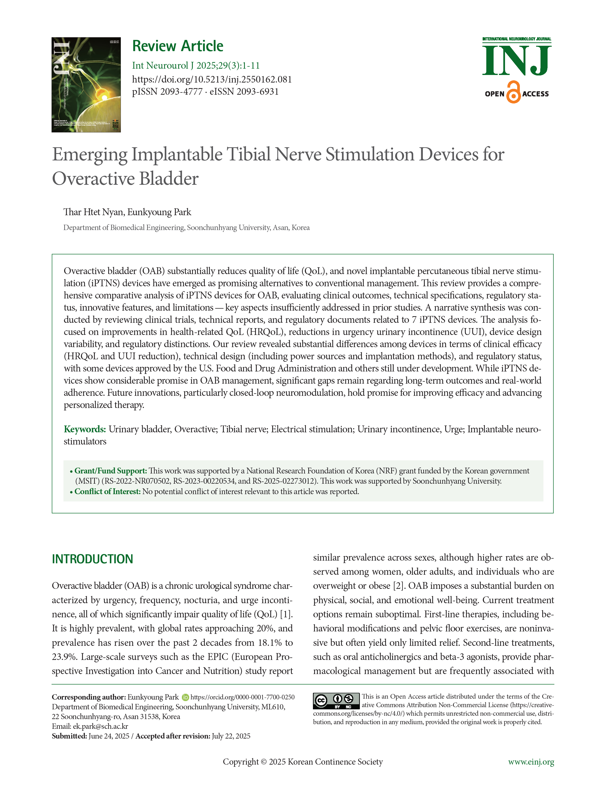
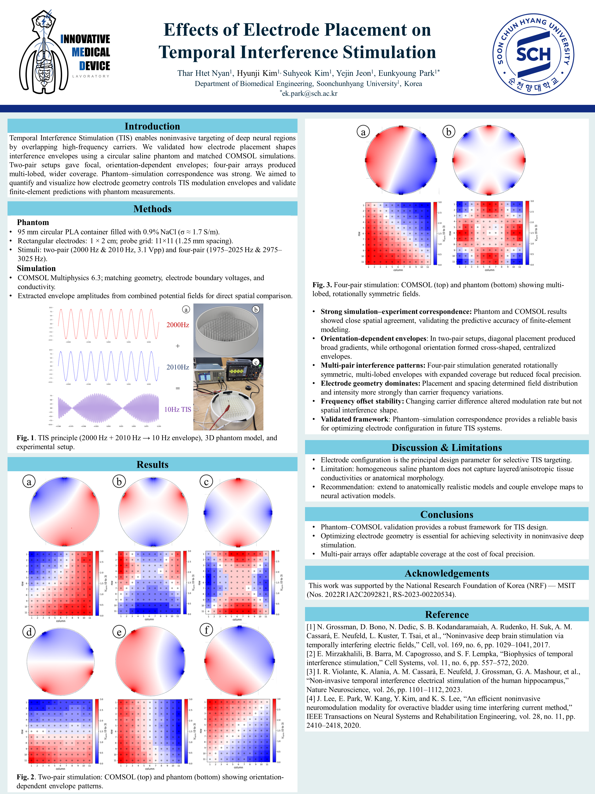

|
Thar Htet Nyan I am a third‑year Biomedical Engineering student at Soonchunhyang University and a recipient of the Global Korea Scholarship Undergraduate 2022. Currently, I’m working as an Undergraduate Researcher in the iMeD Lab, where I develop and evaluate neuromodulation, electroceutical, and implantable device solutions. Language: Burmese (Native), English (Professional), Korean (Professional) Software & Tools: Microsoft Office, Autodesk Inventor, OrCAD, LTspice, LEGO® MINDSTORMS® , COMSOL, ANSYS Programming Languages: Python (Lego Robotics & Data Analysis), C++ (Arduino), C (STM32CubeIDE , Atmega128, Embedded) |

|
Research |
|  |
Emerging Implantable Tibial Nerve Stimulation Devices for Overactive Bladder
Thar Htet Nyan*, Eunkyoung Park International Neurourology Journal, 2025;29(3):1-11 Impact Factor: 2.1 (2024 JCR) Our review article, “Emerging Implantable Tibial Nerve Stimulation Devices for Overactive Bladder”, provides a comprehensive analysis of iPTNS devices, covering clinical outcomes, technical features, and regulatory aspects. It highlights current progress, key challenges, and future directions for improving OAB management. |

|
Implantable Tibial Nerve Stimulation for Refractory Overactive Bladder
Thar Htet Nyan*, Suhyeok Kim, Yejin Jeon, Eunkyoung Park 2025 Spring Conference of the Korean Society of Medical and Biological Engineering (KOSOMBE), Jeju I’m honored to have presented my research poster titled “Implantable Tibial Nerve Stimulation for Refractory Overactive Bladder” at the 2025 Spring Conference of the Korean Society of Medical and Biological Engineering (KOSOMBE), held in Jeju. |
|  |
Effects of Electrode Placement on Temporal Interference Stimulation: Phantom Model and Simulation Study
Thar Htet Nyan*, Hyunji Kim, Suhyeok Kim, Yejin Jeon, Eunkyoung Park 2025 Autumn Conference of the Korean Society of Medical and Biological Engineering (KOSOMBE), Gimhae It was a great opportunity to present our poster titled “Effects of Electrode Placement on Temporal Interference Stimulation: Phantom Model and Simulation Study” at the 2025 Autumn Conference of the Korean Society of Medical and Biological Engineering (KOSOMBE), held in Gimhae. |
ProjectsI am particularly interested in Microprocessors, Embedded Systems, Electronics, Neuromodulation, and Medical Device Innovation, with a focus on applying these technologies to real-world biomedical challenges. |
|
|
Patient-Specific Bladder Digital Twin (Two-Way FSI)
Thar Htet Nyan* A patient-specific bladder simulation developed using MRI-based 3D reconstruction and two-way fluid–structure interaction in ANSYS. The model captures bladder filling from 100–700 mL, illustrating urine flow dynamics and bladder wall deformation, and highlights the potential of digital twins for non-invasive urodynamic assessment. |

|
Minimalistic Finger ECG Board
Thar Htet Nyan* A compact ECG sensing board designed to capture heart signals using only two thumbs and one toe for grounding. Built with an AD620 instrumentation amplifier, the system supports real-time signal display via oscilloscope. Sized like an iPhone, it offers a portable and minimalistic approach to biosignal monitoring. |

|
High-Performance Sports Wheelchair
Thar Htet Nyan* A lightweight, high-performance wheelchair designed using Autodesk Inventor. It features a durable frame, ergonomic seating, and enhanced maneuverability. Inspired by traditional Japanese rickshaws (jinrikisha), this design blends cultural elegance with modern engineering for athletes in assistive sports. |

|
Smart Ergonomic Wheelchair
Thar Htet Nyan* A modern wheelchair designed with Autodesk Inventor, featuring a MagSafe phone holder, cup holder, storage box, anti-tip bars, and a reclined cushioned backrest. The design prioritizes user comfort, safety, and ease of mobility through thoughtful engineering. |
|
Lego Color Sorter V.2
Thar Htet Nyan* An upgraded autonomous sorting system built with LEGO Mindstorms and Python. V.2 features dual synchronized conveyors, multi-stage sorting arms, enhanced speed and precision, and optimized real-time color recognition. Designed for improved throughput and mechanical coordination in educational robotics. |
|
|
Lego Color Sorter V.1
Thar Htet Nyan* A Python-based color sorting system capable of sorting 16 blocks in 20 seconds. Features include a motorized pusher, rotating rail, push-button trigger, and real-time color sensor. Highlights skills in robotics, sensor integration, and mechanical design. |